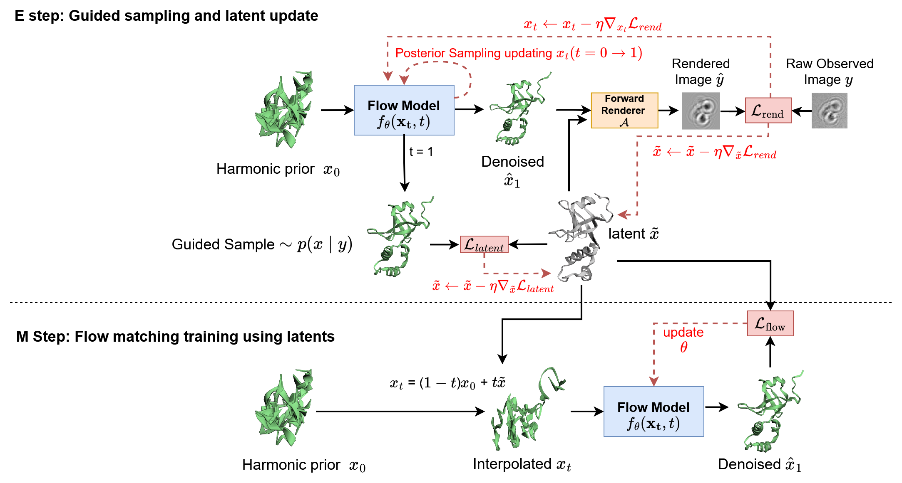
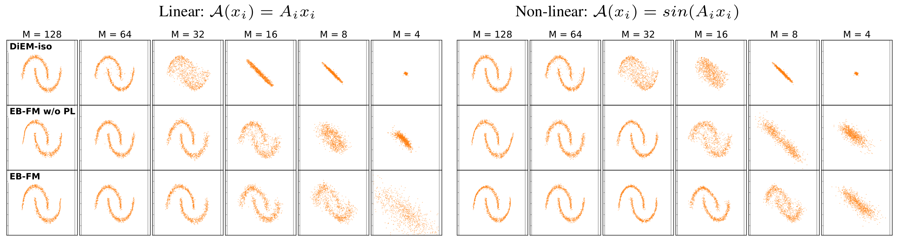
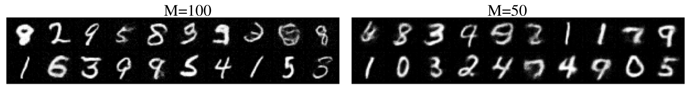
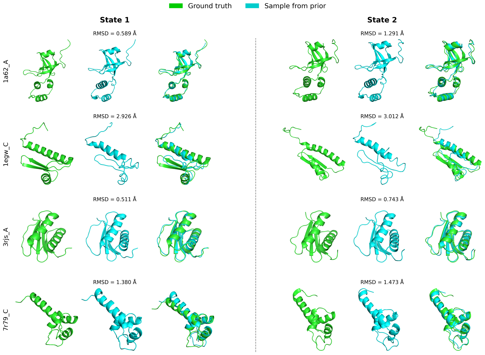

NeurIPS 2026
University of Haifa
We address the problem of learning generative priors over high-dimensional latent variables from indirect, noisy observations, with a focus on continuous heterogeneity in cryo-electron microscopy (cryo-EM). In this setting, 3D atomic structures x ∈ ℝ3Na are never directly observed and must be inferred from 2D projection images y generated by a complex, non-linear forward operator. We propose Empirical Bayes Flow Matching (EB-FM), a method that learns a flow matching prior pθ(x) directly from observations using a Monte Carlo stochastic approximation Expectation-Maximization framework. EB-FM alternates between an E-step that performs approximate posterior sampling from pθ(x | y) via guided flow-based generation while maintaining persistent latent estimates through stochastic approximation, and an M-step that updates the flow model using these stabilized latent variables as training targets. This approach eliminates the need for pretraining on clean data and naturally accommodates non-linear forward models. We validate our method on controlled inverse problems using two-moons and MNIST data, and demonstrate its effectiveness on simulated cryo-EM data with known poses, showing that EB-FM can recover continuous distributions of protein conformations directly in atomic-coordinate space.
EB-FM learns a flow matching prior over atomic structures from indirect observations by iteratively inverting the forward model during training, formulated as a Monte Carlo stochastic approximation Expectation-Maximization algorithm.

Green is the ground-truth MD simulation; blue is prior samples from EB-FM. The samples are aligned to the ground-truth molecular-dynamics trajectories for four proteins. The prior is trained only on simulated 2D cryo-EM projections, one noisy image per conformation.
1a62_A_traj_sample.mp41egw_C_traj_sample.mp43rjs_A_traj_sample.mp47r79_C_traj_sample.mp4We sample 2D points zi ∈ ℝ2 and lift them into a high-dimensional space xi ∈ ℝD (D = 128) via a fixed random matrix P. For each data sample, we draw a fixed random measurement matrix Ai ∈ ℝM×D and generate noisy observations yi = 𝒜(xi) + εi, where εi ∼ 𝒩(0, σ2IM). We test two forward operators: a linear model 𝒜(xi) = Aixi and a non-linear model 𝒜(xi) = sin(Aixi). To evaluate performance across varying degrees of problem difficulty, we sweep the measurement dimension M ∈ {128, 64, 32, 16, 8, 4}, representing a transition from a fully-determined system to a highly under-determined regime (M/D = 0.03).

We follow a very similar setup on MNIST: the data are images with D = 784 pixels, and each observation is a random projection of the image to M = 100 or M = 50 measurements.

We apply EB-FM to recovering the distribution of 3D protein conformations from noisy 2D cryo-EM projections, directly in atomic-coordinate space. The data come from molecular-dynamics (MD) simulations: each of four proteins has an MD ensemble of 10,000 conformations, and each conformation is rendered with TEM-simulator to obtain a single simulated cryo-EM image.
